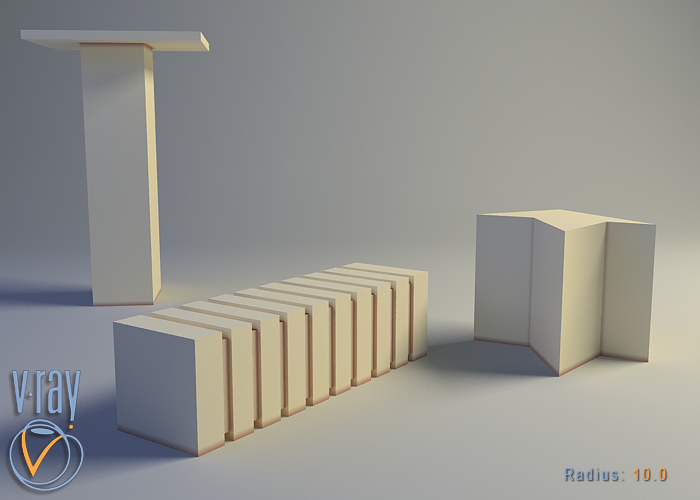

VRayDirt
VRayDirt Overview
VRayDirt is a texture map that can be used to simulate a variety of effects: for example, dirt around the crevices of an object, or to produce an ambient occlusion pass.
Parameters
Radius - this parameter determines the amount of area (in scene units) where the VRayDirt effect is produced. You can also use a texture to control the radius. The texture intensity is multiplied by the radius to calculate the final radius at a given surface point. If the texture is white at a given surface point, the full radius value is used. If the texture is black, a radius of 0.0 is used.
Example: Radius Parameter
This parameters determines the amount of area (in units) where the VRayDirt effect is produced. Notice that two of the object do not contact any other objects on their tops, so there is no dirt effect.
Simple VRayMtl - no Dirt effect

radius: 10.0
radius: 30.0
Example: Texmap Radius
In the next example, a bitmap is used in the texmap radius slot. Notice that the main radius parameter still has effect - it determines the amount of area where the texmap radius bitmap would blend.
radius: 100
texmap radius: bitmap
radius: 300
texmap radius: bitmap
Occluded color - this is the color that will be returned by the texture for occluded areas. You can also use a texture map for this parameter.
Unoccluded color - this is the color that will be returned by the texture for unoccluded areas. You can also use a texture map for this parameter.
Distribution - this parameter will force the rays to gather closer to the surface normal. The effect is that the dirt area is being narrowed closer to the contact edges. For ambient occlusion, set this parameter to 1.0 to get distribution similar to the ambient lighting on a diffuse surface.
Example: Distribution Parameter
This parameter will force the rays to gather closer. The effect is that the dirt area is being narrowed closer to the contact edges.

Rays distribution (X,Y,Z) axis
Equal angle between rays distribution
Distribution parameter = 0.0

Rays distribution (X,Y,Z) axis
Different angle between rays distribution
Distribution parameter > 0.0
distribution: 1.0
distribution: 3.0
distribution: 10.0
Falloff - this parameter controls the speed of the transition between occluded and unoccluded areas.
Example: Falloff Parameter

falloff: 0.0
falloff: 1.0
falloff: 5.0
Subdivs - controls the number of samples that V-Ray takes to calculate the dirt effect. Lower values render faster but produce a more noisy result.
Example: Subdivisions Parameter
subdivisions: 1
subdivisions: 5
subdivisions: 20
Bias (X,Y,Z)
-
these parameters will bias the normals to the
(X, Y, Z)
axes, so that the dirt effect is forced to those directions. Consider that these parameter can also take negative values for inverting the direction of the effect.
Example: Bias
These parameters will bias the normals so that the dirt effect is forced to some of the axis(es).
bias_X: 100.0
bias_Y: 100.0
bias_Z: 100.0
Ignore for GI - this check-box determines whether the dirt effect will be taken into consideration for GI calculations or not.
Example: Ignore for GI
This check-box determines whether the dirt effect is going to be visible during the GI calculation.
ignore for GI: on
ignore for GI: off
Consider same object only - when on, the dirt will affect only the objects themselves, without including contact surfaces and edges. If off, the entire scene geometry is participating for the final result.
Example: Consider Same Object Only
consider same object only: on
Invert normal - this option allows the user to revert the effect with respect to surface normals - e.g. instead of crevices, open corners will be shaded with the occluded color. This parameter will change the direction of tracing the rays. When it is off, the rays are traced outside the surface; when on, they are traced inside the surface.
Example: Invert Normal
In the next example, a bitmap is used in the texmap radius slot. Notice that the main radius parameter still has effect - it determines the amount of area where the texmap radius bitmap would blend.
invert normal: off
invert normal: on
Work with transparency - when on, , VRayDirt will take into account the opacity of the occluding objects. This can be used, for example, if you want to calculate ambient occlusion from opacity-mapped trees etc. When off (by default), occluding objects are always assumed to be opaque. Note that working with correct opacity is slower, since, in that case, VRayDirt must examine and evaluate the material on the occluding objects.
Environment occlusion - when this option is checked V-Ray will use the environment when calculating the occlusion of areas that are not occluded by other objects.
Mode - allows you to specify the mode in which the dirt map is going to be calculated
-
Ambient occlusion - normal ambient occlusion will be calculated
-
Reflection occlusion (Phong, Blinn, Ward) - reflection occlusion will be used. The difference between ambient and reflection occlusion is basically in the direction in which rays are traced. With ambient occlusion rays are traced in all directions uniformly while with reflection occlusion the direction depends on the viewing direction (just as when calculating reflections) and the spread of the rays depends on the Reflection glossiness and BRDF type used
Reflection glossiness - this parameter controls the spread of the rays traced for reflection occlusion. A value of 1 means that just a single ray is traced (just like when tracing clear reflections), smaller values make the spread of the traced rays.
Affect reflection elements - when checked the ambient reflection will affect the reflection render elements. This can be used to create reflection mask.
Exclude - allows you to disable the calculation of the VRayDirt map for specific objects. Excluded object will not be shaded by the VRayDirt map.
Result Affect - specifies a list of objects which will affect the calculation of the VRayDirt map. Excluded objects will be considered "invisible" for the calculations of the VRayDirt map.